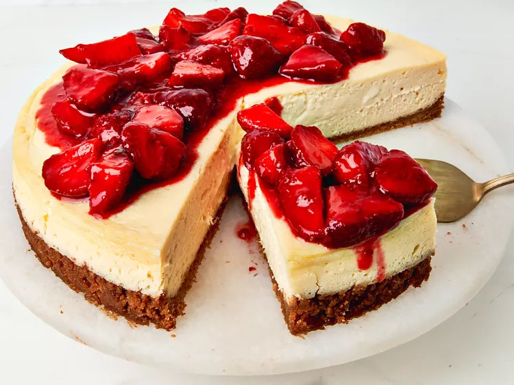

Perfect Cheesecake with Strawberry Topping

Description
This cheesecake is definitely a dessert to impress with a delicious graham cracker crust,
ultra-creamy filling, and a scrumptious fresh strawberry topping.
Ingredients
Crust
- 14 graham crackers
- 1/4 cup white sugar
- 6 tbsp. butter, melted
Filling
- 4 8oz. packages cream cheese, softened
- 1 1/4 cups white sugar
- 3/4 cups sour cream
- 2 tsp. vanilla extract
- 2 tsp. fresh lemon juice
- 1/4 tsp. salt
- 4 large eggs
Topping
- 2 qt. fresh strawberries, halved & divided
- 1/2 cup white sugar
- 1 tbsp lemon juice
- 2 tsp. vanilla extract
- 2 tsp. cornstarch
- 1/2 cup cold water
Directions
- Preheat oven to 350 degrees F (175 degrees C). Break graham crackers into the bowl of a food processor.
Add sugar and pulse until large crumbs form. Add butter and pulse until combined and mixture resembles slightly wet sand.
- Lightly grease a 10-inch springform pan; press mixture lightly into the bottom and about 1 inch up the sides of the pan.
- Bake until fragrant and slightly golden brown around the edges, about 8 minutes. Let cool. Reduce oven temperature to 325 degrees F (165 degrees C).
Bring about 3 quarts of water to a boil.
- Place cream cheese in bowl of a stand mixer. Using a paddle attachment, whip cheese on medium speed just until smooth, to avoid incorporating too much air.
Add sugar and beat until smooth, scraping down the sides of the bowl as needed. Add in sour cream, vanilla, lemon juice and salt and blend until just combined.
With the mixer on low speed, add eggs, one at a time, mixing until each egg is fully incorporated, then mix until just combined and smooth,
scraping down the sides of the bowl as needed.
- Pour mixture into the prepared crust. Wrap bottom and sides of pan well with heavy duty aluminum foil.
Place the pan inside a large deep roasting pan and set pan in the oven. Carefully pour boiling water into
the roasting pan around the cheesecake without letting any water inside the foil wrap or the cheesecake.
- Bake until center is very slightly jiggly, about 50 minutes. Carefully remove pans from the oven and allow cheesecake to cool in the water bath for 15 to 20 minutes.
After about 10 minutes, just when cheesecake starts to release itself from the sides, run a knife around the sides.
- Remove wrapped cheesecake from water bath and place on a wire rack to cool completely, about 1 hour.
Unwrap cheesecake and place in refrigerator until fully chilled and ready to serve, at least 4 hours.
- Place 1/2 of strawberries in a large saucepan and stir in sugar, lemon, vanilla, cornstarch, and water. Bring to a boil over high heat, stirring often.
Reduce heat to medium high and allow mixture to simmer until berries are softened.
- Using a potato masher, mash strawberries until slightly chunky; continue to simmer until thickened, about 10 minutes. Remove from heat, stir in remaining strawberries,
and let cool to room temperature. Refrigerate until ready to serve.
- Serve cheesecake slices with strawberry topping.
Back